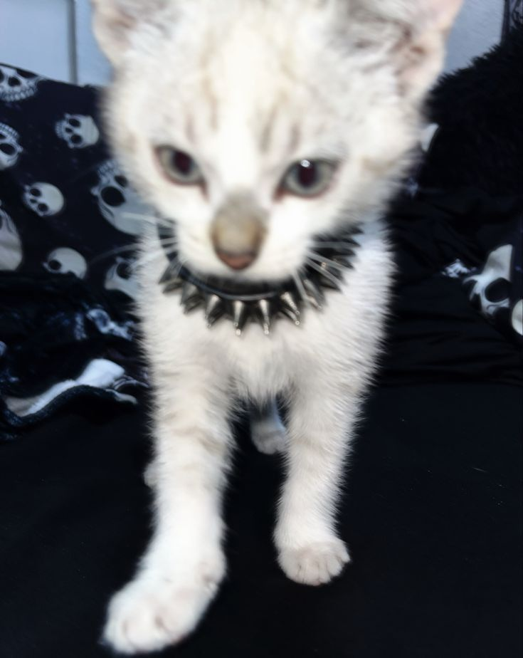

You'll convince yourself you're good, that you're stronger. You don't cut, nor do you burn. You don't smoke, nor do you get high. But you know another form of harm that consumes your mind.
Los gatos son hermosos y son muy independientes, por lo que es fácil cuidarlos.
Los perros son animales muy fieles.